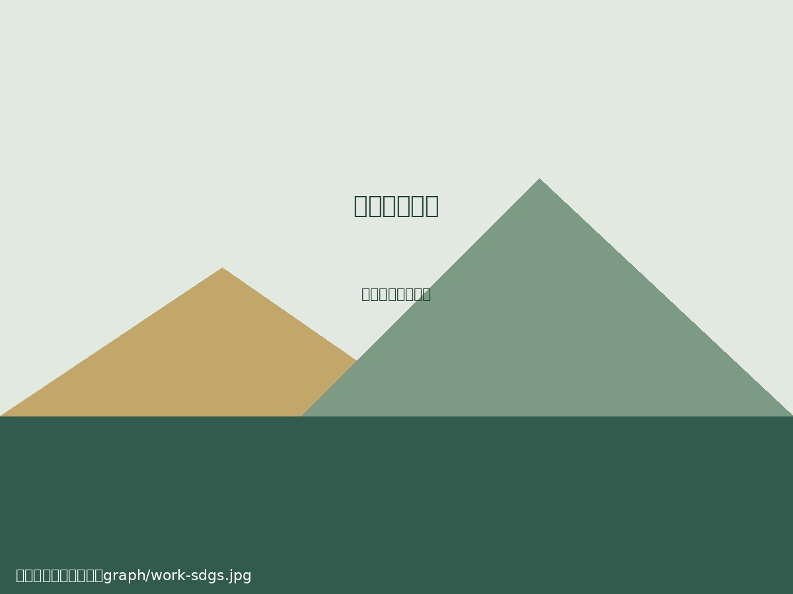

課程專題
作品封面
graph/work-sdgs.jpg
graph/work-sdgs.jpg

永續發展與在地行動
從永續發展目標出發，觀察生活周遭的議題，提出具體的行動構想與改善建議。
這裡收藏國管系學生的課程專題、活動紀錄、研究成果與影音創作。每一份作品，都是觀察世界、合作實踐與表達想法的過程。
可依作品類型篩選，或輸入關鍵字搜尋。下方卡片為版型示例，請替換成實際作品名稱、介紹及媒體檔案。

從永續發展目標出發，觀察生活周遭的議題，提出具體的行動構想與改善建議。
以文化分享與互動體驗為主軸，規劃活動流程，讓參與者在交流中認識多元觀點。
蒐集公開資料並比較不同觀點，整理議題背景、影響與可能的解決方向。
以短片呈現學生關注的議題，從企劃、拍攝到剪輯，練習團隊協作與敘事表達。
記錄活動籌備、分工合作與參與心得，呈現課堂之外的實踐經驗。
分析目標受眾與溝通情境，設計內容主題及推廣方式，將想法整理為完整提案。
將影片檔案放進 graph 資料夾，再把下方 video 的 src 改成檔名即可播放。
影片檔名範例：graph/student-video-01.mp4
影片檔名範例：graph/student-video-02.mp4
網站已先準備好圖片與影片的路徑規則，後續只要放入檔案並更新作品文字即可。
將照片、封面及影片全部放入網站資料夾中的 graph 資料夾。
確認 HTML 的 src="graph/檔名" 與實際檔名、大小寫及副檔名完全一致。
編輯作品卡片中的標題、說明、分類與搜尋關鍵字，即可更新作品展示內容。
認識國管系的學習方向與系所特色。